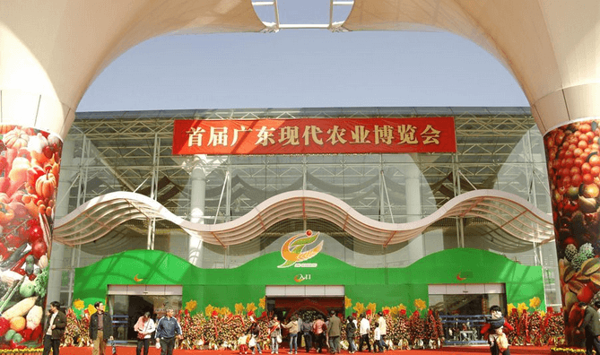
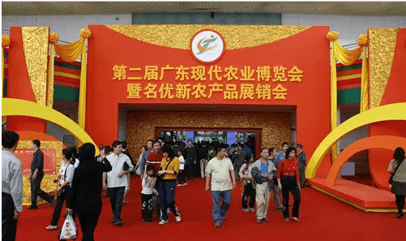
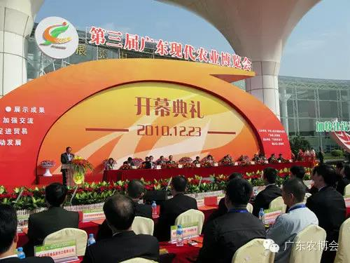
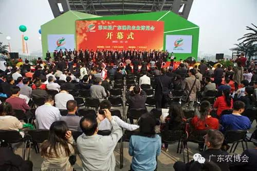
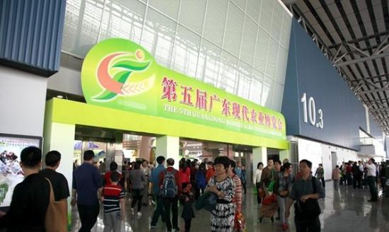
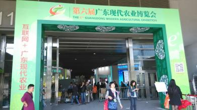

第一届农博会关键字：改革开放广东农业第一展
首届广东现代农业博览会是经省委、省政府批准，由广东省农业厅和佛山市人民政府主办，这是我省改革开放二十多年来首次举办的大型农业综合性博览会，被誉为改革开放以来“广东农业第一展”。
博览会于2006年12月15日至18日在佛山市顺德区陈村花卉世界举行。本届农博会是我省各级农业及涉农部门、农业院校、农业及农产品加工流通企业展示成果、促进交流、推动合作的盛会。展示面积1.3万平方米，共有21个地级以上市及省直农（牧）、林、渔、水利、气象、国土、农垦、农资、农机、农业科研和教育等部门组成的37个展团参展，参展单位和产品涵盖了整个大农业及涉农部门的方方面面，是各市、各系统农业（涉农行业）发展成就的一次大检阅。
农博会有近800家农业企业参加展览和展销，产品包括农、林、牧、渔等方面的新成果、新技术、新产品和先进适用农业机械等，共计20大类，近3000个品种。参展产品80％以上为有效期内无公害农产品、绿色食品、有机食品和省级以上名牌产品（农业类），体现了广东农产品安全、质优的特点，集中展示了近几年来广东省农业科研的最新成果，是广东现代农业产、学、研一体化的缩影。各展团通过图文并茂和丰富的实物，充分展示了我省改革开放以来，尤其是近十年来全省现代农业建设取得的重大成就，如实反映了我省向农业现代化目标迈进的坚实步伐。农博会期间，共签订95个农业经贸及投资项目，合同总金额达67.8亿元；签订意向合同8个，合同金额6635万元；农产品展销区销售金额3437万元。农博会取得了实实在在的社会效益和经济效益，得到了各级领导和社会各界的充分肯定与高度评价。
第二届农博会关键字：新成果，新机遇，新发展
第二届广东现代农业博览会暨名优新农产品展销会于2008年11月21日至24日在佛山市顺德区陈村花卉世界举行。本届农博会由广东省人民政府主办，广东省农业厅、佛山市人民政府承办。
本届农博会以“新成果、新机遇、新发展”为主题，以农业新技术、新产品、新成果的展示和名优新农产品展销为主体，突出“新”的特色，展销并举，推招结合，充分展示改革开放30周年广东现代农业发展成果，为十七届三中全会胜利召开献礼。展示面积1.5万平方米，其中室内展区面积1万平方米，设综合展示区和21个地级以上市展示区；室外展区面积5千平方米，设400个展位，由参展企业展销名、优、新农产品。
据不完全统计，有超过1300多种名优新农产品参加了展示，1800多种农产品参加了展销，参展企业共164家。农博会期间，有100家企业签订了96个农业合作项目合同，合同总金额达108亿元，实现了签约企业和签约金额“双百”的目标。现场销售农产品463万元，签订了经贸合同1.43亿元，意向合同6.07亿元。
第三届农博会关键字：展示成果、加强交流、促进贸易、推动发展
第三届广东现代农业博览会于2010年12月23日至26日在佛山市顺德区陈村花卉世界举行。本届农博会由农业部和广东省人民政府联合主办，广东省农业厅、佛山市人民政府承办。
本届农博会以“展示成果、加强交流、促进贸易、推动发展”为主题，全面展示我省加快转变农业发展方式、加快建设现代农业强省、加快统筹城乡一体化发展取得的丰硕成果。
展馆包括综合展示区、省直有关单位展示区、21个地级以上市展示区、涉农科研院校展示区、粤台农业合作成果展示区、扶贫“双到”成果展示区、农机展示区和展销区。
参展产品包括农、林、牧、渔名优新农产品及其精深加工品,先进适用农业机械及农资用品等18类2000多种名优农产品。
农博会上有221家企业签订了111个农业合作项目，合同总金额242亿元，其中在开幕式现场上台60个项目，签约总金额195.6亿元；农博会期间，现场销售农产品967.785万元，签订意向合同5900万元；还举办了2场各具特色的农业高新技术项目和名优新农产品推介会，为地方和企业搭建了招商引资、产业转移和农产品推销的有效平台。
第四届农博会关键字：产业兴农、科技强农、品牌立农、创新富农
第四届广东现代农业博览会于2012年12月15-17日在广州市琶洲国际会展中心举行。本届农博会由农业部和广东省人民政府主办，广东省农业厅承办。
以“产业兴农、科技强农、品牌立农、创新富农”为主题，充分展示广东省大力推动现代农业发展所取得的成果。
展馆总面积20980平方米，设综合展区和展销区。其中综合展区面积4200平方米，集中展示我省涉农七大行业（农业、水利、林业、渔业、农垦、供销、气象）、七所院校的现代农业发展新成就，凸显广东农业产业型、外向型、高效型、安全型特色。
农博会期间，签约农业合同金额近300亿元，现场销售超过530万元。据不完全统计，3天时间的农博会吸引了近15万人流，带旺了整个展销区，销售场面一度火爆。首次亮相农博会的岭南农耕文化展示区前更是人头攒动。“石碓”、“土油榨”、“泥划子”、“曲辕犁”、“爪镰”……这些在城市里根本见不到、甚至在很多农村地区也近乎绝迹的传统农具都可以在农博会现场体验，给现代都市人提供了一个了解和现场体验传统农耕文化的机会。
第五届农博会关键字：品牌让生活更美好
第五届广东现代农业博览会于2014年11月4日在广州市广交会展馆举行，本届农博会的展出面积约2万平方米，参展企业600多家，展会规模及参展企业均为历届之最。参与的有国外相关企业、泛珠三角各省区、新疆、西藏、港澳台地区及我省各地级以上市、省直有关部门、高校、科研院所等。展会包括展示区和展销区。
本届农博会以“品牌让生活更美好”为主题，着重突出“品牌、科技、智慧、特色”四个亮点，集中展现广东现代农业发展成果，同时重点推介展销广东十大名牌系列农产品以及省内外、境内外的名优新特农产品，以展促销，以销旺展，展销并举。
在短暂的三天时间里，数十万市民前来观展选购，不少市民还是举家出动，现场人流络绎不绝，销售场面热烈，尤其是农博会上首次推出的十大名牌系列农产品，吸引了众多市民的关注，产品供不应求。三天现场销售额达2193.5万元，签订销售合同30379.2万元，签订意向合同178857.6万元，合计211430.3万元，效果显著
第六届农博会关键字 互联网+广东现代农业
2015年11月27日-30日，由广东省人民政府主办、广东省农业厅承办、奔田网协办的第六届广东现代农业博览会（以下简称农博会）在广州琶洲广交会展馆B区10.1馆和11.1馆举行。本届农博会展出时间比去年延长了一天，规模为历届之最，展出面积约2万平方米，参展企业790多家，新疆、西藏、福建、安徽、广西、云南、湖南、贵州等8个省区及广东省各地级以上市、省直有关部门、高等院校、科研院所等将组团参展，将有3000多个优质农产品集中亮相。
本届农博会紧扣“互联网+广东现代农业”主题，将全场分为4大功能区（产业链上游展示区、产业链中游展销区、产业链下游展销区、O2O线下体验区）共9个展区（省直部门综合成就展区、农业信息化工程成就展区、农业科技成果转化展区、广东名特优新农产品展区、农业电商展区、休闲农业展区、省直各部门农产品展销区、省内各市农产品展销区、各省农产品展销区）
为期四天的第六届广东现代农业博览会30日在广州广交会展馆落下帷幕。据不完全统计，农博会四天现场销售5608.2万元(人民币，下同)；签订贸易合同金额23.86亿元，其中意向合同金额13.41亿元。本届广东农博会吸引了700多家企业的3000多种名特优新农产品参展。
四天中，共有逾16万人次前来观展购物。会上的销售场面亦十分火爆，尤其是重点评选推介的广东省名特优新农产品，产品供不应求，吸引了众多市民的关注。现场销售额比上届翻了一番以上，贸易合同金额增长近20%。本届广东农博会最大的亮点是无处不体现“互联网+现代农业”的概念，整个电商展区创造了3500万元以上成交额，达成意向合作订单总额超过1000万元。